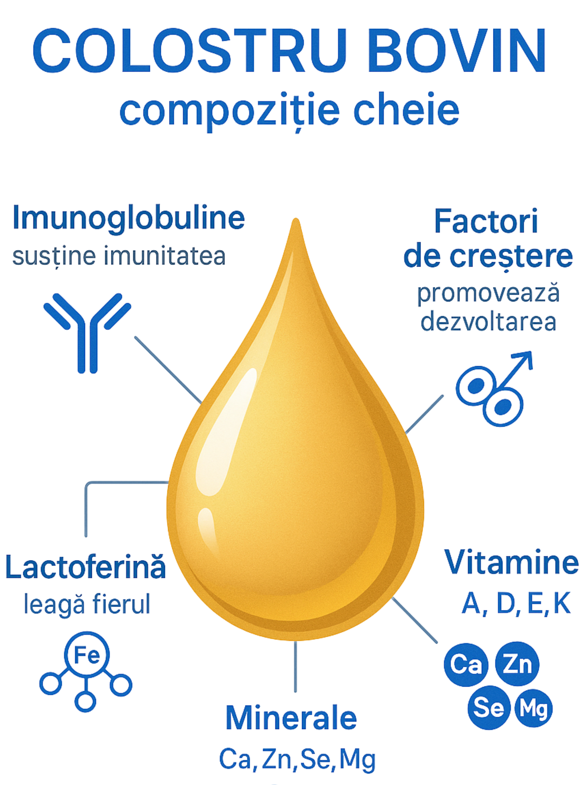

Decodarea colostrului - fundamentul biologic al imunității
Înainte de a analiza un produs specific, este esențial să înțelegem de ce colostrul este considerat una dintre cele mai valoroase și complexe substanțe nutritive din natură. Nu este lapte obișnuit; este un fluid bioactiv, proiectat de natură pentru a oferi un start exploziv în viață.
Ce este colostrul și de ce este excepțional?
Colostrul, cunoscut și ca "primul lapte", este fluidul secretat de glandele mamare ale mamiferelor în primele 24-72 de ore după naștere, înainte de apariția laptelui matur. Compoziția sa este radical diferită de cea a laptelui: este exponențial mai bogat în compuși imunitari, factori de creștere, vitamine și minerale, și mai sărac în lactoză. Rolul său biologic este critic: transferă imunitatea pasivă de la mamă la nou-născut și inițiază dezvoltarea corectă a tractului gastrointestinal. Colostrul bovin, în particular, este de interes științific major, deoarece conține o concentrație de factori imunitari de până la 40 de ori mai mare decât colostrul uman.

Elementele bioactive din colostru
Arsenalul bioactiv din colostru: componentele cheie
Superioritatea colostrului nu stă într-un singur ingredient, ci în sinergia unui complex de substanțe bioactive care acționează concertat:
1. Imunoglobulinele (Ig): pilonul apărării. Acestea sunt anticorpi specializați. Colostrul este extrem de bogat în Imunoglobulina G (IgG), care are capacitatea de a neutraliza o gamă largă de agenți patogeni, precum viruși și bacterii. Acționează ca o "armată de elită" care patrulează organismul și oferă o linie de apărare imediată.
2. Lactoferina: modulatorul inteligent. Această proteină are proprietăți remarcabile: este antivirală, antibacteriană, antifungică și antiinflamatoare. Unul dintre mecanismele sale cheie este legarea fierului, un mineral esențial pentru multiplicarea multor bacterii patogene. Prin "sechestrarea" fierului, lactoferina inhibă creșterea acestora, în timp ce sprijină celulele sistemului imunitar.
3. Factorii de creștere (IGF-1, TGF-α & β): arhitecții regenerării. Colostrul este cea mai bogată sursă naturală de factori de creștere. Aceștia nu doar stimulează dezvoltarea normală la nou-născuți, ci, la adulți, joacă un rol crucial în repararea și regenerarea țesuturilor. Contribuie la vindecarea mucoasei intestinale (esențial în sindromul de intestin permeabil sau "leaky gut"), la refacerea masei musculare după efort și la menținerea sănătății pielii și a țesuturilor conjunctive.
4. Polipeptidele bogate în prolină (PRP): comunicatorii sistemului imunitar. Aceste mici lanțuri de aminoacizi acționează ca niște semnale, având un rol de reglare a timusului, "sediul central" al sistemului imunitar. PRP-urile pot calma un sistem imunitar hiperactiv (cum se întâmplă în bolile autoimune) sau pot stimula un sistem imunitar deficitar, ajutându-l să răspundă mai eficient la infecții.
Standardul LR Colostrum - excelența prin calitate și procesare
Cunoașterea beneficiilor generale ale colostrului este doar primul pas. Eficacitatea unui supliment depinde în mod critic de calitatea materiei prime și, mai ales, de metoda de procesare. Aici, produsele Colostrum de la LR stabilesc un standard de referință pe piață.
Diferențiatorii cheie ai LR Colostrum
1. Origine și puritate controlate. LR utilizează exclusiv surplusul de colostru de la vaci crescute în ferme de înaltă calitate din Europa (în principal Germania). Se folosește doar colostrul din primele 12 ore post-partum, perioada cu cea mai mare concentrație de compuși bioactivi. Acest angajament asigură o materie primă superioară, necontaminată cu antibiotice sau hormoni.
2. Procesul de fabricație la rece: secretul conservării puterii bioactive. Acesta este, probabil, cel mai important avantaj tehnologic. Imunoglobulinele, enzimele și factorii de creștere sunt extrem de sensibili la căldură. Pasteurizarea clasică, folosită pentru laptele de consum, ar distruge iremediabil majoritatea acestor componente valoroase. LR utilizează un proces de fabricație la rece, patentat și blând, care degresează și elimină cazeina din colostru fără a-l expune la temperaturi ridicate. Astfel, produsul final păstrează intact întregul spectru de compuși bioactivi, garantând eficacitatea maximă.
3. Garanția calității: sigiliul SGS INSTITUT FRESENIUS. Pentru a oferi consumatorului o garanție absolută a calității, produsele Colostrum de la LR sunt testate de SGS INSTITUT FRESENIUS, unul dintre cele mai respectate laboratoare independente din Europa. Acest sigiliu nu este o certificare punctuală, ci implică un proces de monitorizare continuă: de la inspecția fermelor și testarea materiei prime, la verificarea fiecărui lot de produs finit. Acesta certifică faptul că produsul este pur, sigur și că respectă întocmai specificațiile de pe etichetă. Este o dovadă incontestabilă a unui produs premium.
Forme de prezentare: lichid vs. capsule
LR oferă colostru sub două forme, adaptate unor nevoi diferite:
Colostrum Lichid (Direct): Este forma cea mai pură și rapid asimilabilă, un produs premium pentru un suport imunitar intensiv. Este ideal în perioadele de convalescență, la primele semne de răceală, în sezoanele cu risc crescut de viroze sau pentru oricine dorește un efect rapid și puternic.
Colostrum Capsule: Conțin pulbere de colostru liofilizată (uscată prin înghețare, o altă metodă blândă de conservare). Sunt o opțiune excelentă pentru utilizare pe termen lung, pentru întreținerea constantă a sistemului imunitar și pentru conveniență în administrare (ușor de luat în călătorii).
Aplicații practice și utilizări ale colostrului
Datorită compoziției sale unice, colostrul este recunoscut pentru capacitatea sa de a întări rezistența organismului și de a oferi protecție împotriva agenților patogeni. Beneficiile sale se extind însă într-o arie largă de aplicații, fiind un aliat valoros pentru persoanele cu susceptibilitate crescută la infecții, oboseală cronică sau stres instalat.
Aplicații generale și beneficii demonstrate
- Tulburări imune și autoimune: Sprijină restaurarea sistemului imunitar după boală și modulează răspunsurile imune în afecțiuni precum Hashimoto.
- Infecții recurente: Oferă suport împotriva infecțiilor bacteriene, virale și fungice (ex. Candida albicans).
- Sănătate orală: Contribuie la prevenirea demineralizării smalțului dentar și apariția cariilor.
- Sport și efort fizic intens: Datorită factorilor de creștere, accelerează recuperarea energetică și refacerea musculară, fiind un suport remarcabil pentru sportivii de performanță.
- Managementul greutății și anti-aging: Reduce senzația de foame și favorizează creșterea masei musculare, care are un rol esențial în metabolismul grăsimilor. De asemenea, contribuie la întârzierea proceselor de îmbătrânire.
- Recuperare și convalescență: Susține organismul în procesele de reabilitare după accidente, intervenții chirurgicale sau boli.
Rolul suportiv în afecțiuni complexe și oncologie
Cercetările moderne au evidențiat rolul important al componentelor din colostru, precum lactoferina, în diverse afecțiuni complexe. Studiile au arătat că aceste substanțe bioactive pot avea un efect inhibitor asupra unor linii celulare canceroase și pot inhiba angiogeneza (formarea de noi vase de sânge care hrănesc tumorile), reducând astfel riscul metastazelor. Este important de subliniat că rolul colostrului este unul de **suport și prevenție**. Acesta poate susține organismul în timpul tratamentelor oncologice și ajută la refacerea sistemului imunitar post-chimioterapie, însă nu este un medicament și nu poate vindeca boli. Orice abordare terapeutică trebuie discutată și supervizată de un medic specialist.
Concluzie finală: o investiție în imunitatea fundamentală
A alege Colostrum de la LR nu înseamnă doar a cumpăra un supliment, ci a investi într-un produs de o calitate excepțională, validată științific și certificată independent. Prin sursa controlată, procesarea la rece care protejează ingredientele active și garanția sigiliului Fresenius, LR oferă nu doar "aurul lichid" al naturii, ci cea mai bună versiune a acestuia, proiectată pentru a oferi un suport real, măsurabil și sigur pentru sistemul imunitar și regenerarea organismului.